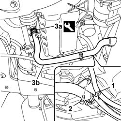
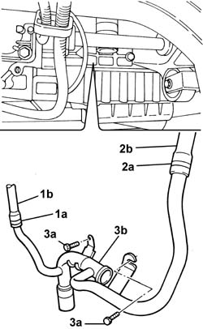

1088D24 RIGID PIPE FOR COOLANT INLET TO WATER PUMP - R + R
- Path
- Procedures > 10 ENGINE > 1088 ENGINE COOLING > 1088D COOLANT PIPES AND HOSES > 1088D24 RIGID PIPE FOR COOLANT INLET TO WATER PUMP - R + R
- Kind
- repair procedure (removal / refitting; the operation number is the code)
- Applies to
- engines: 2.0 16v, 2.0 16V JTD, 2.2 16V JTD; all production periods
- Interactive page
- https://sloeber94.github.io/elrnDB-fUlss/en/#/179007194
Applies to: engines: 2.0 16V JTD; all production periods
See in Op. 1088C30
Applies to: engines: 2.0 16v; all production periods
 Removing
Removing
 Refitting
RefittingOp. 7055B54 UNDER-ENGINE GUARD - R R
-
- Position a suitable container for collecting the coolant.
1. Release the electrical wiring from the bracket.
2. Undo the bolt fixing the rigid engine coolant pipe.
 | Description | Code | Function |
|---|---|---|---|
. | Caliper | 1.881.138.000 | Removing bands |

Applies to: engines: 2.0 16v; all production periods
1. Adjust the band (1a) using the tool and release the hose (1b) connected to the thermostat.
2. Adjust the band (2a) using the tool and release the hose (2b) connected to the expansion tank.
3. Undo the fixing nut and bolt (3a) and remove the water pump rigid coolantinlet pipe (3b).
| Description | Code | Function |
|---|---|---|---|
. | Caliper | 1.881.138.000 | Removing bands |

Applies to: engines: 2.0 16v; all production periods
Refitting
Removing- Place the water pump rigid inlet pipe in position.
- Tighten the nut and the bolt fixing the rigid pipe to torque.
 | Value - daNm | Fastening | Component | Ø |
|---|---|---|---|---|
. | 1,4 | Bolt | COOLANT PUMP RIGID INLET PIPE | - |
| Value - daNm | Fastening | Component | Ø |
|---|---|---|---|---|
. | 1,4 | Nut | COOLANT PUMP RIGID INLET PIPE | - |
- Fit the hoses and renew the fastenings using the special tool.
| Description | Code | Function |
|---|---|---|---|
. | Caliper | 1.881.138.000 | Removing bands |
- Position the rigid coolant pipe.
- Tighten the bolt fixing the rigid coolant pipe.
- Fit the hose and renew the fastening using the tool.
| Description | Code | Function |
|---|---|---|---|
. | Caliper | 1.881.138.000 | Removing bands |
- Fasten the electrical wiring to the bracket.
Applies to: engines: 2.2 16V JTD; all production periods
See in Op. 1088C30